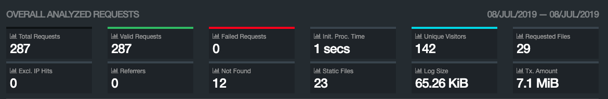

<?xml version="1.0" encoding="UTF-8"?>
<rss version="2.0"
xmlns:content="http://purl.org/rss/1.0/modules/content/"
xmlns:dc="http://purl.org/dc/elements/1.1/"
xmlns:slash="http://purl.org/rss/1.0/modules/slash/"
xmlns:atom="http://www.w3.org/2005/Atom"
xmlns:wfw="http://wellformedweb.org/CommentAPI/">
<channel>
<title>毒奶博主丨欢迎使用代理访问本站。 - access.log</title>
<link>https://limbopro.xyz/tag/access-log/</link>
<atom:link href="https://limbopro.xyz/feed/tag/access-log/" rel="self" type="application/rss+xml" />
<language>zh-CN</language>
<description></description>
<lastBuildDate>Wed, 10 Jul 2019 14:47:00 +0800</lastBuildDate>
<pubDate>Wed, 10 Jul 2019 14:47:00 +0800</pubDate>
<item>
<title>Access.log 可以收集或分析出哪些数据（特征）</title>
<link>https://limbopro.xyz/archives/1152.html</link>
<guid>https://limbopro.xyz/archives/1152.html</guid>
<pubDate>Wed, 10 Jul 2019 14:47:00 +0800</pubDate>
<dc:creator>毒奶</dc:creator>
<description><![CDATA[有用小工具https://whoer.net/zh 查看你的 IP/VPN 伪装程度https://iplocation.com/ 用这个解析ip（基站）服务器所在地理位置部通过IP地址，部分已...]]></description>
<content:encoded xml:lang="zh-CN"><![CDATA[
<h2>有用小工具</h2><p><a href="https://whoer.net/zh">https://whoer.net/zh</a> 查看你的 IP/VPN 伪装程度<br><a href="https://iplocation.com/">https://iplocation.com/</a> 用这个解析ip（基站）服务器所在地理位置</p><h2>部通过IP地址，部分已可查寻数据</h2><p>1.ip地址  <br>2.LBS地址（部分网站会发起定位请求）<br>3.浏览器UA及其版本数据 <br>4.IP所在地时间<br>5.DNS服务器<br>6.对应ip访问对应网页<br>7.点击次数<br>8.停留时间<br>9.操作系统</p><h2>相关文章</h2><h3>Nginx 访问日志分析工具 GoAccess</h3><p></br></br></br></br></br></br></br></br></br></p><p class="more"><a href="../../../archives/1152.html" title="Access.log 可以收集或分析出哪些数据（特征）">[...]</a></p>
]]></content:encoded>
<slash:comments>0</slash:comments>
<comments>https://limbopro.xyz/archives/1152.html#comments</comments>
<wfw:commentRss>https://limbopro.xyz/feed/archives/1152.html</wfw:commentRss>
</item>
<item>
<title>Nginx 访问日志分析工具 GoAccess 使用简单教程</title>
<link>https://limbopro.xyz/archives/1107.html</link>
<guid>https://limbopro.xyz/archives/1107.html</guid>
<pubDate>Sun, 07 Jul 2019 02:23:00 +0800</pubDate>
<dc:creator>毒奶</dc:creator>
<description><![CDATA[主理人说本站已于7月8日晚10点正式开启可视化Web日志分析工具，你可随时查看我们网站的访问记录。地址：https://limbopro.xyz/results.html (样例)access....]]></description>
<content:encoded xml:lang="zh-CN"><![CDATA[
<p></p><h2>主理人说</h2><p>本站已于7月8日晚10点正式开启可视化Web日志分析工具，你可随时查看我们网站的访问记录。地址：<a href="https://limbopro.xyz/results.html">https://limbopro.xyz/results.html</a> (样例)</p><p><code>access.log</code> 里面简直就是一个宝藏。学习分析它，或许会对<code>爬虫索引</code>与网站优化有些许好处。至少你会知道哪些页面被<code>检索</code>到，但打开时已经是404页面。当然，如果网站有被人攻击，那么分析access.log也是可以借机封禁一些过分IP的。</p></img><p class="more"><a href="../../../archives/1107.html" title="Nginx 访问日志分析工具 GoAccess 使用简单教程">[...]</a></p>
]]></content:encoded>
<slash:comments>0</slash:comments>
<comments>https://limbopro.xyz/archives/1107.html#comments</comments>
<wfw:commentRss>https://limbopro.xyz/feed/archives/1107.html</wfw:commentRss>
</item>
</channel>
</rss>